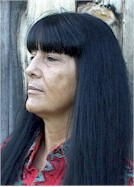

Center for the Defense of Free Enterprise
Center for the Defense of Free Enterprise
LEADERS AND ADVISORS
HOME ISSUES OPPOSITION PROJECTS DEFENDERS WISE USE BOOKSTORE ARCHIVE
|
|
|
HOME ISSUES OPPOSITION PROJECTS DEFENDERS WISE USE BOOKSTORE ARCHIVE |
Our leaders pioneered the non-profit sector's defense of free enterprise in the public interest. Since its founding in the American Bicentennial year of 1976, the Center has raised public awareness and grassroots support for the American free enterprise system. With equal vigor, the Center has confronted and exposed its opponents. Following the vision of our Founding Fathers, the Center's leaders know that the combination of a democratic form of government and a capitalistic economy gives Americans unprecedented opportunity. Our leaders know that the spirit of CAN DO!, the urge toward innovation and improvement, and the basic goodness of the American free enterprise system is worth defending. In this era of challenges to our democratic rights and the free enterprise system, we know that determination and persistence is essential to America's survival. After the events of September 11, 2001, our vision has taken on even greater meaning. The Center for the Defense of Free Enterprise has been the cutting edge in non-profit defense of the for-profit economy for twenty-five years, and today shines brightly among the many organizations that have come to stand beside us.
___________________
Alan M. Gottlieb, President
alan@cdfe.org
Alan M. Gottlieb has been President of
the Center since its founding in 1976. Alan is a Nuclear Engineering graduate of
the University of Tennessee and attended the Institute on Comparative Political
Economic Systems at Georgetown University. Alan was born in Los Angeles,
California in 1947 and lived there until age 10 when his parents "kidnapped" him
to New York City (their home town). He remained there until the legal age of 18
when he escaped to Knoxville, Tennessee to attend college. His college ties
remain strong as he is currently a member of the University of Tennessee Alumni
Association.
Alan is an active member of the Outdoor Writers Association of America. Alan edited the book, The Wise Use Agenda: The Citizen's Guide to Environmental Resource Issues and co-authored Trashing the Economy: How Runaway Environmentalism is Wrecking America. In addition, Alan is President of Merril Associates, a nationally recognized direct response advertising agency.
Alan is listed in Who's Who in America. He currently resides in Bellevue, Washington with his wife Julie and daughters Amy, Merril, Alexis, and son Andrew. He holds Honorable Discharges from the New York National Guard, Washington State National Guard and the United States Army.
___________________
Ron Arnold, Executive Vice President
ron@cdfe.org
 Ron Arnold has been Executive Vice
President of the Center since 1984. Honored as the "Father of the Wise Use
Movement," Ron has gained wide recognition as an effective fighter for
individual liberties, property rights and limited government. His projects have
been covered by all major media and the magazines of every major environmental
group.
Ron Arnold has been Executive Vice
President of the Center since 1984. Honored as the "Father of the Wise Use
Movement," Ron has gained wide recognition as an effective fighter for
individual liberties, property rights and limited government. His projects have
been covered by all major media and the magazines of every major environmental
group.
Ron is a veteran journalist who has turned in more than 300 assignments for dozens of trade magazines. His 8-part series The Environmental Battle earned the American Business Press Editorial Achievement Award for best magazine series of 1981. His 1983 investigative report for Reason magazine on EcoTerrorism remains the classic in the field. Ron wrote the authorized biography of James Watt and his tenure as Secretary of the Interior (At the Eye of the Storm: James Watt and the Environmentalists). Ron is the author of 7 books, has edited 8 others, and founded The Free Enterprise Press in 1987 to create an outlet for important free enterprise authors.
Ron is listed in Who's Who in America. He is the owner of a consulting firm, Northwoods Studio. Ron resides with his wife Janet in Bellevue, Washington. They have three married daughters.
___________________
ADVISORS

Paul Driessen, Senior Policy Advisor
Director, Economic Human Rights Project
paul@cdfe.org
Paul Driessen, APR, Esquire, is principal of Global-Comm Partners, a Northern Virginia public relations firm specializing in energy and environmental public policy issues, and a senior fellow for the Atlas Economic Research Foundation, Committee for a Constructive Tomorrow (CFACT) and Frontiers of Freedom Institute.
___________________

Nick Nichols, Senior Fellow
nick@cdfe.org
Nick is the retired Chairman and CEO of Nichols-Dezenhall Communications Management Group, Ltd., a firm he founded in 1987, specializing in crisis management and risk communications with an emphasis on biotechnology, energy, food, drug, product safety and environmental controversies.
During 2003-2004, Nick developed and taught interdisciplinary, graduate level Crisis Management and Risk Communications courses for Johns Hopkins University. He is a guest lecturer on crisis management and risk communications at Washington, D.C. area universities.
Nick is a widely recognized expert on the topics of crisis management, media and government relations, eco-terrorism, the precautionary principle, and the political influence of non-governmental organizations (NGOs).
He is a featured speaker at meetings, seminars and national conferences of state and federal legislators, government officials, international and domestic trade associations, corporate executives, and public policy groups including: the American Legislative Exchange Council, the State Legislative Leaders Foundation, the Competitive Enterprise Institute, and the CATO Institute.
Nick has appeared on television network news programs including ABCs Nightline, NBCs The Today Show and the CBS Evening News, and participated as a guest expert on numerous talk shows.
Nick Nichols is author of the book, Rules for Corporate
Warriors, published in October 2001, and has written numerous articles as well
as corporate publications that define and examine crisis management strategies
and media relations tactics.
___________________

Robert Bidinotto, Senior Advisor
robert@cdfe.org
Robert James Bidinotto is an award-winning writer and speaker who reports on
cultural and political issues from the philosophic perspective of principled
individualism.
Bidinotto is editor of Foundation Watch for Capital Research Center in Washington, D.C. He is a former Staff Writer for Reader's Digest, where he authored high-profile investigative pieces on environmental issues, crime, and other public controversies. His articles, essays, book and film reviews have appeared in many other journals as well. In addition, he is a popular public speaker, and has appeared on numerous TV and radio talk shows.
Bidinotto's writings on environmental issues include investigative articles for Reader's Digest on global warming and the 1989 Alar scare, as well as extensive research on the ozone depletion issue. He is author of a widely praised monograph, The Green Machine, which critically examines the environmentalist philosophy and movement. He also runs a Web site focusing on environmental issues, www.ecoNOT.com.
Robert Bidinotto makes his home on the shore of the Chesapeake Bay, where he avidly enjoys the sights and sounds of nature. "The natural world," he says, "is an inspiring setting and inexhaustible resource for the creative work of human beings."
He may be reached by e-mail at contact@ecoNOT.com
___________________
Jon Reisman, Senior Scholar
jon@cdfe.org
Jon
Reisman is an associate professor of economics and public policy at the
University of Maine at Machias, where he teaches a variety of courses including
Environmental Policy and Political Correctness in American Society. He has a
B.A. in economics and environmental studies from Colby College, an M.A. in
economics from Brown University and an M.A. in public policy and management from
the University of Southern Maine.
Reisman worked for Gov. Angus King in 1995 getting rid of federally mandated car
testing in Maine. Upon returning to rural Downeast Maine, he led the effort
opposing the endangered species listing of Atlantic salmon. In 1998 he was the
GOP congressional nominee in Maine's sprawling 2nd district.
Reisman developed his first-in-the-nation "Political Correctness in America"
class after Maine's environmental community tried to have him censored by the
state Attorney General and Governor in response to his actions opposing the
salmon listing. The course is now offered on the web. Reisman's home page is
http://www.umm.maine.edu/faculty/jreisman/index.shtml
___________________

Diana White Horse Capp, Adjunct Advisor
diana@cdfe.org
lfbouchey@hotmail.com
Born in the traditional Lenape territory
of southeastern Pennsylvania in 1952, Diana Capp emerges from a background of
generational farm and forest cultures extending since time out of mind. Her
views on land ownership and environmental topics are indelibly informed by her
heritage both as a daughter of the Indian Nations and the American Revolution,
and a family history of enduring relentless government land takings, including
those as recent as 1932 and 1969. Residing chiefly in remote areas of
Washington state since 1979, this eastern native also possesses deep
understanding of rural Western reservation and non-reservation communities.
Capp received her education in liberal arts at two alternative institutions, Washington International College, Washington, DC, and The Evergreen State College, Olympia, Washington. Strongly influenced by traditional native spiritual philosophy and her parents staunch support of the early civil rights movement, Capps arts major/psych minor work at Evergreen focused on human rights issues, a theme now illuminated by her writing in the environmental field. Before entering that arena, Capp worked in the arts, social, health and education fields.
Capps public presentations, including testimony at the Congressional Subcommittee hearing on Forests and Forest Health in February 2000, and her published works on the effect of the environmental movement on traditional rural cultures, commenced in 1998. She has published pamphlets, numerous expository pieces and commentaries, and during her term as Chair of the Upper Columbia Resource Council, initiated and served as editor of the newspaper format publication, Natural Resource Justice Alert.
___________________
Alan Caruba, Adjunct Scholar
alancaruba@cdfe.org
lfbouchey@hotmail.com
In 1990, Mr. Caruba founded The National
Anxiety Center, using both humor and
hard facts to counter the environmental movement's opposition to the use of
all pesticides, its global warming claims, and its agenda to undermine
property rights.
A popular guest on radio and television, Mr. Caruba was most recently on the
Fox News Channel discussing the rapid spread of the West Nile Fever due to
the environmental movement's opposition to the use of pesticides to suppress
the nation's mosquito population.
A former professional journalist, Mr. Caruba, 65, is a veteran public
relations counselor whose firm, The Caruba Organization, is headquartered in
Maplewood, NJ where he resides. He has authored several books and has been a
contributor to numerous trade and consumer magazines over his long career.
In addition to serving as the Communications Director for the American Policy
Center, a grassroots think tank, headquartered in Warrenton,
Virginia, Mr. Caruba also serves on the American Policy Foundation's Board of
Directors. Mr. Caruba is a member of the American Society of Journalists and
Authors,
the Society of Professional Journalists, the National Association of Science
Writers, and is a charter member of the National Book Critics Circle.
The National Anxiety Center maintains an Internet site at
www.anxietycenter.com where Mr. Caruba's column
is posted weekly. In
addition, Mr. Caruba maintains
www.boringinstitute.com
as the site of his
famed media spoof and clearinghouse for information about boredom, along with
www.bookviews.com, his monthly report on the
best in new fiction and
non-fiction books.
RETURN TO CENTER FOR THE DEFENSE OF FREE ENTERPRISE HOME PAGE
{kind=link}